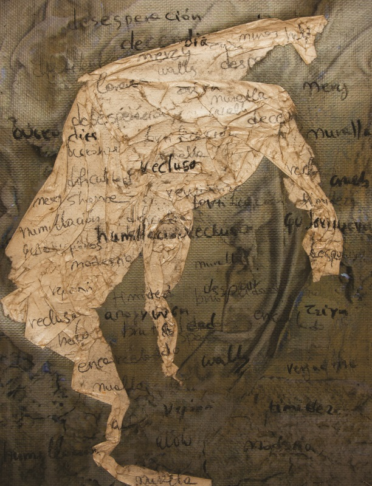

Art Invisible Walls
|
High wall rose around us, most of the time invisible walls that are meant to achieve the containment of our freedom. Walls that societies build around people as a well-ex plan to erase our individuality and uniqueness. Socio-economic, cultural, religion, identity factors are the foundation of those walls. We cannot always see them but we live with them around us. We walk in a pathway while it’s dark and foggy, unknowingly that we are actually walking inside a tunnel. We are walking and moving forward thinking that we are the ones making the choices in our lives, where to turn, where to go. A deception disguised as our own freedom of choice. When we realise that those walls exist, when we take a look back to our past and realise that we lived under their own term of “freedom", only then the pathway and the visual way for a future with true freedom will illuminate. An awaken visual way will make the walls fall.
|
 |